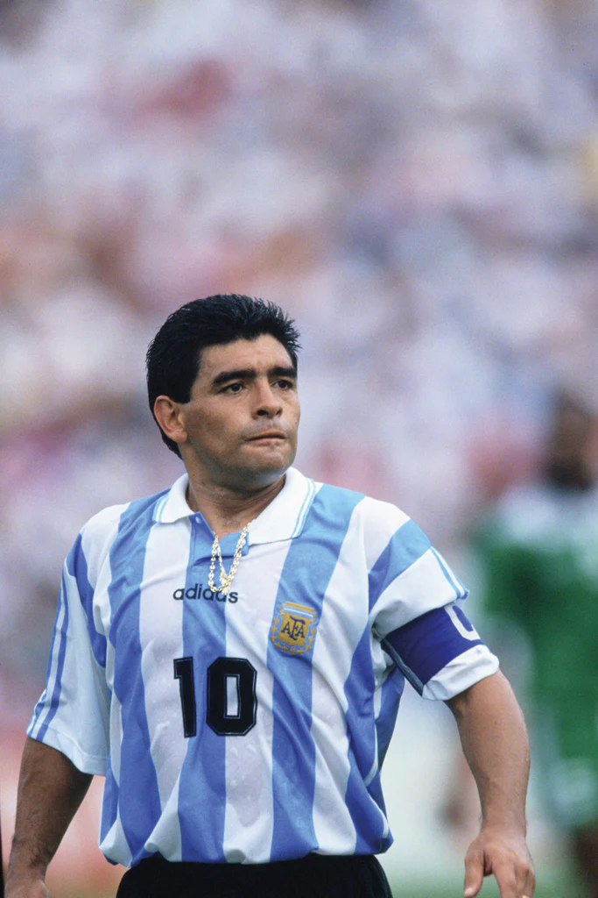
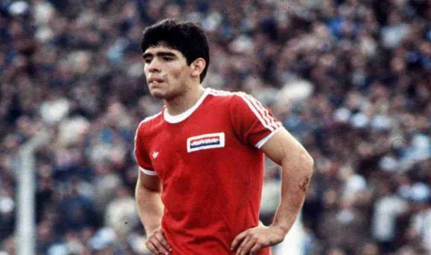
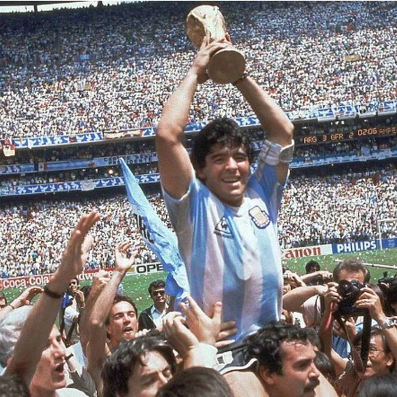
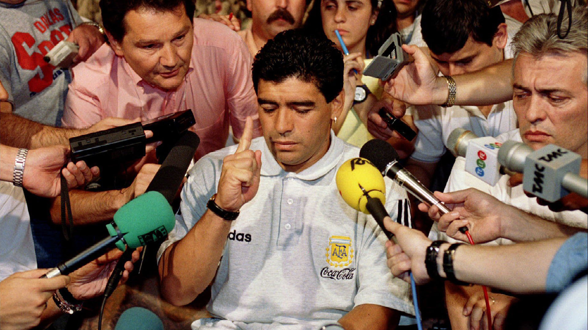
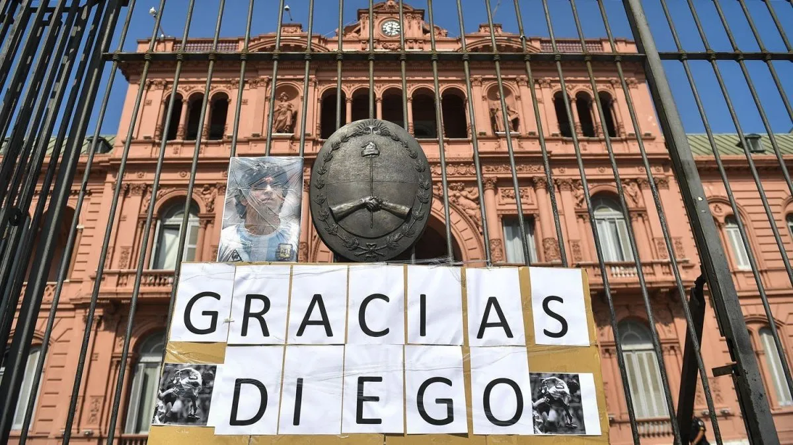

Diego Armando Maradona, el eterno 10
Me equivoque y pague, pero la pelota... la pelota no se mancha
Autor: Agustin Xavier Alvarez
Fecha: 16 de mayo de 2025
Diego Armando Maradona nació el 30 de octubre de 1960 en Villa Fiorito, una de las zonas más humildes del conurbano bonaerense. Criado en una familia trabajadora, desde muy pequeño mostró un talento inusual con la pelota. Su relación con el fútbol empezó a los tres años, cuando ya no se despegaba de una pelota de trapo. A los 10 años, deslumbraba con su habilidad en "Los Cebollitas", el equipo infantil de Argentinos Juniors, donde su estilo y visión de juego comenzaban a llamar la atención de todos.
A pesar de las dificultades económicas, su familia siempre lo apoyó en su pasión. Diego no solo destacaba por su capacidad técnica, sino también por su inteligencia en el campo, su liderazgo y su pasión desbordante. Su historia es la de un chico del barrio que soñaba con llegar a la Selección Argentina y conquistar el mundo, algo que tiempo después lograría con creces.
El nacimiento de un ídolo
Maradona debutó en la Primera División del fútbol argentino con solo 15 años, en 1976, jugando para Argentinos Juniors. Desde ese momento, su carrera fue en ascenso. En 1981 firmó con Boca Juniors, donde rápidamente se convirtió en ídolo tras consagrarse campeón del torneo Metropolitano. Su juego revolucionaba cada estadio que pisaba: el público se rendía ante su magia, su precisión y su irreverencia.
En 1982 dio el salto a Europa para jugar en el FC Barcelona. Aunque tuvo momentos brillantes, también enfrentó dificultades, incluyendo lesiones y conflictos con la directiva. Sin embargo, fue en Napoli donde encontró su lugar en el mundo. Entre 1984 y 1991, llevó al club italiano a la gloria, ganando dos ligas, una Copa de Italia, una Supercopa y una Copa UEFA. Maradona transformó al Napoli en un símbolo del sur de Italia y en un fenómeno cultural y social que iba más allá del fútbol.
México 86: La consagración
La Copa del Mundo de 1986 fue el escenario donde Maradona alcanzó la cima del fútbol mundial. Capitán de una Selección Argentina que no era favorita, Diego se puso el equipo al hombro y mostró una de las actuaciones individuales más impactantes en la historia de los mundiales. Su actuación frente a Inglaterra en los cuartos de final quedó grabada en la memoria colectiva: primero con el polémico gol con la mano, que él mismo bautizó como "La Mano de Dios", y luego con el "Gol del Siglo", una obra maestra donde eludió a medio equipo rival desde mitad de cancha.
En semifinales ante Bélgica y en la final contra Alemania, volvió a brillar, mostrando liderazgo, talento y determinación. Argentina se coronó campeona del mundo y Maradona fue elegido el mejor jugador del torneo. Su imagen levantando la Copa en el Estadio Azteca es un ícono eterno del deporte. Desde ese momento, su figura trascendió el fútbol para convertirse en leyenda.
Sombras fuera de la cancha
A pesar de su genialidad en la cancha, la vida personal de Maradona estuvo marcada por excesos, adicciones y problemas legales. Durante sus años en Napoli comenzaron sus problemas con la cocaína, lo que impactó su salud y su rendimiento. En 1991 fue suspendido por doping, y en el Mundial de 1994, en Estados Unidos, fue apartado tras un control antidopaje positivo que puso fin a su carrera en la Selección.
También tuvo múltiples conflictos con la prensa, con dirigentes, y enfrentó varias internaciones médicas a lo largo de los años. Su vida osciló entre la adoración popular y la crítica pública. Sin embargo, su carisma, su humanidad y su conexión con el pueblo lo mantuvieron como una figura amada y respetada, especialmente en Argentina y Nápoles. Maradona siempre fue consciente de sus errores, y muchas veces habló abiertamente de sus caídas, en un intento por mostrarse tal como era: un ser humano, con luces y sombras.
El adiós de un mito
El 25 de noviembre de 2020, Diego Maradona falleció a los 60 años por un paro cardiorrespiratorio. La noticia paralizó al país y tuvo repercusión mundial. Se decretaron días de duelo nacional en Argentina y miles de personas asistieron a despedirlo en la Casa Rosada. Su partida dejó un vacío inmenso en el corazón de los fanáticos del fútbol.
Más allá de sus hazañas deportivas, Maradona dejó un legado cultural, político y social. Fue símbolo de rebeldía, de lucha desde abajo, de pasión sin límites. En cada rincón del mundo donde se respira fútbol, su nombre es sinónimo de magia. Murió el hombre, pero nació el mito eterno. Diego sigue vivo en los murales, en las camisetas, en los estadios, y sobre todo, en la memoria colectiva del pueblo.
